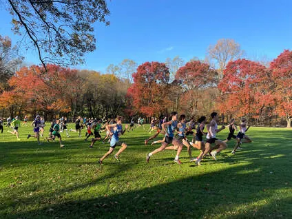

Saturday, November 14, 2026
Holmdel Park
44 Longstreet Road Holmdel, N.J.
Shore A.C. is hosting its 8th Annual Alumni Cross Country Race at Holmdel Park on Saturday, November 14, 2026. This race is in honor of the late Bill Bruno, who was always a champion for our sport as a coach, Athletic Director and Assistant Director of the NJSIAA.
This year's event will include the traditional 5K race for men and women at 8:30 AM, with team and individual competition (see below). For younger athletes or those just looking for a shorter race, we will also offer a 3K at 9;00 AM. Holmdel Park offers a beautiful yet challenging cross country course that we encourage you to endure and later enjoy!
Results will be posted on www.shoreac.org. Don't miss the unique opportunity to nostalgically run the 5K trails of Holmdel Park! There will be two team competition categories: a high school/college teams and club and open fun related teams: club, family, friends, business, or other category of your choice.
Parking IS available on-site as this is prior to the NJ High School Meet of Champions races at 11 AM and Noon.
This year's event will include the traditional 5K race for men and women at 8:30 AM, with team and individual competition (see below). For younger athletes or those just looking for a shorter race, we will also offer a 3K at 9;00 AM. Holmdel Park offers a beautiful yet challenging cross country course that we encourage you to endure and later enjoy!
Results will be posted on www.shoreac.org. Don't miss the unique opportunity to nostalgically run the 5K trails of Holmdel Park! There will be two team competition categories: a high school/college teams and club and open fun related teams: club, family, friends, business, or other category of your choice.
Parking IS available on-site as this is prior to the NJ High School Meet of Champions races at 11 AM and Noon.
Schedule
7:30 AM - Bib Pick-Up
8:30 AM - 5K Race
9:00 AM - 3K Race
8:30 AM - 5K Race
9:00 AM - 3K Race
5K and 3K Registration
|
5K RATES
$21 - register by 10/10 $25 - register by 11/14 $30 - register on event day, 11/15 |
3K RATES
$12 - register by 10/10 $16 - register by 11/14 $20 - register on event day, 11/15 |
Race Information
The race is open to all entrants, though we suggest the 3K for all elementary and middle school ages kids
and the 5K for everyone in high school or older.
Athletes can compete unattached or as part of a team.
Choose a team category: High school, college, club or open team
If running for a team, make sure you select "join a team" during registration.
You do not need to be a NJ alumni to participate.
You can register as a club or run unattached.
and the 5K for everyone in high school or older.
Athletes can compete unattached or as part of a team.
Choose a team category: High school, college, club or open team
If running for a team, make sure you select "join a team" during registration.
You do not need to be a NJ alumni to participate.
You can register as a club or run unattached.
Registration and Scoring
All athletes must pre-register for the event via RunSignUp. The entry fee is $20 per person. Limited event day registration is available at 7:30 AM on race day for $30 per person.
Scoring in each race will be based on each team’s top 3 finishers. Individuals who are not on a team will be excluded from the scoring. A school’s 4th and 5th runner can displace those from other teams.
Chip timed and live results with Viper Timing Awards will be presented on-site to the top 3 female and male overall finishers; the top 3 female and male masters finishers; the top 3 male and female teams in the college, high school alumni, club and open team categories; and the team with the most participants.
Scoring in each race will be based on each team’s top 3 finishers. Individuals who are not on a team will be excluded from the scoring. A school’s 4th and 5th runner can displace those from other teams.
Chip timed and live results with Viper Timing Awards will be presented on-site to the top 3 female and male overall finishers; the top 3 female and male masters finishers; the top 3 male and female teams in the college, high school alumni, club and open team categories; and the team with the most participants.
|
 6th Annual Bill Bruno Alumni XC Run
|